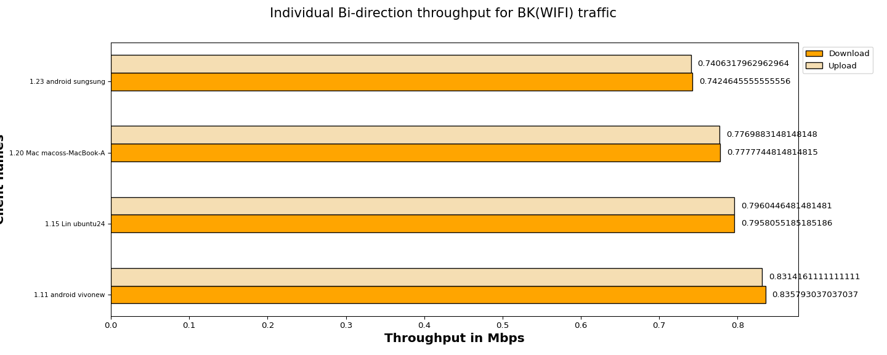
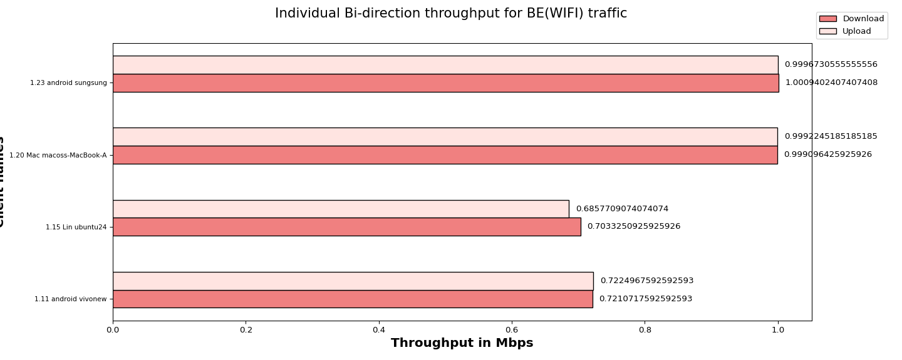
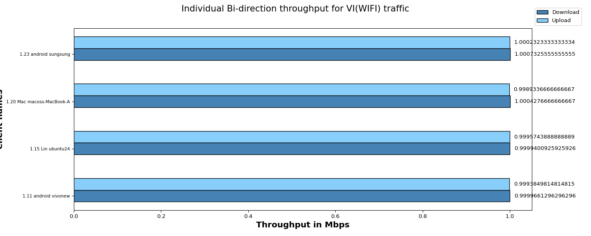
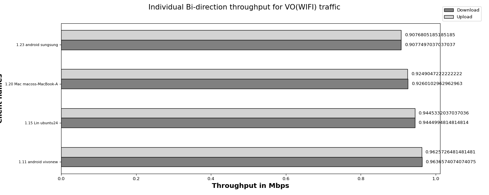

The objective of the QoS (Quality of Service) traffic throughput test is to measure the maximum achievable throughput of a network under specific QoS settings and conditions. By conducting this test, we aim to assess the capacity of network to handle high volumes of traffic while maintaining acceptable performance levels, ensuring that the network meets the required QoS standards and can adequately support the expected user demands.
| Test Configuration |
|
||||||||||||||||||||||||||||||||||||||||
| No of Stations | Throughput for Load 1.0 Mbps-upload | Throughput for Load 1.0 Mbps-download |
|---|---|---|
| 4 | BK : 3.15, BE : 3.41, VI: 4.0, VO: 3.74 | BK : 3.15, BE : 3.42, VI: 4.0, VO: 3.74 |
The below graph represents overall Bi-direction throughput for all connected stations running BK, BE, VO, VI traffic with different intended loadsUpload:1.0 Mbps,Download:1.0 Mbps per tos

The below graph represents individual throughput for 4 clients running BK (WiFi) traffic. X- axis shows “Throughput in Mbps” and Y-axis shows “number of clients”.

| Client Name | MAC | SSID | Type of traffic | Offered upload rate | Offered download rate | Observed average upload rate | Observed average download rate | Observed Upload Drop (%) | Observed Download Drop (%) |
|---|---|---|---|---|---|---|---|---|---|
| 1.11 android vivonew | 92:da:84:1a:a3:75 | NETGEAR_5G_wpa2 | Background | 1.0 Mbps | 1.0 Mbps | 0.8314161111111111 Mbps | 0.835793037037037 Mbps | 0.008139 | 0.009294 |
| 1.15 Lin ubuntu24 | c:5f:67:8c:93:86 | NETGEAR_5G_wpa2 | Background | 1.0 Mbps | 1.0 Mbps | 0.7960446481481481 Mbps | 0.7958055185185186 Mbps | 0.001846 | 0.030775 |
| 1.20 Mac macoss-MacBook-Air.local | 30:35:ad:c5:e1:be | NETGEAR_5G_wpa2 | Background | 1.0 Mbps | 1.0 Mbps | 0.7769883148148148 Mbps | 0.7777744814814815 Mbps | 0.000634 | 0.025337 |
| 1.23 android sungsung | ca:84:bc:fa:cb:7a | NETGEAR_5G_wpa2 | Background | 1.0 Mbps | 1.0 Mbps | 0.7406317962962964 Mbps | 0.7424645555555556 Mbps | 0.000000 | 0.034224 |
The below graph represents individual throughput for 4 clients running BE (WiFi) traffic. X- axis shows “number of clients” and Y-axis shows “Throughput in Mbps”.

| Client Name | MAC | SSID | Type of traffic | Offered upload rate | Offered download rate | Observed average upload rate | Observed average download rate | Observed Upload Drop (%) | Observed Download Drop (%) |
|---|---|---|---|---|---|---|---|---|---|
| 1.11 android vivonew | 92:da:84:1a:a3:75 | NETGEAR_5G_wpa2 | Besteffort | 1.0 Mbps | 1.0 Mbps | 0.7224967592592593 Mbps | 0.7210717592592593 Mbps | 0.000000 | 0.008495 |
| 1.15 Lin ubuntu24 | c:5f:67:8c:93:86 | NETGEAR_5G_wpa2 | Besteffort | 1.0 Mbps | 1.0 Mbps | 0.6857709074074074 Mbps | 0.7033250925925926 Mbps | 0.000742 | 0.000669 |
| 1.20 Mac macoss-MacBook-Air.local | 30:35:ad:c5:e1:be | NETGEAR_5G_wpa2 | Besteffort | 1.0 Mbps | 1.0 Mbps | 0.9992245185185185 Mbps | 0.999096425925926 Mbps | 0.001017 | 0.010242 |
| 1.23 android sungsung | ca:84:bc:fa:cb:7a | NETGEAR_5G_wpa2 | Besteffort | 1.0 Mbps | 1.0 Mbps | 0.9996730555555556 Mbps | 1.0009402407407408 Mbps | 0.000506 | 0.006838 |
The below graph represents individual throughput for 4 clients running VI (WiFi) traffic. X- axis shows “number of clients” and Y-axis shows “Throughput in Mbps”.

| Client Name | MAC | SSID | Type of traffic | Offered upload rate | Offered download rate | Observed average upload rate | Observed average download rate | Observed Upload Drop (%) | Observed Download Drop (%) |
|---|---|---|---|---|---|---|---|---|---|
| 1.11 android vivonew | 92:da:84:1a:a3:75 | NETGEAR_5G_wpa2 | Video | 1.0 Mbps | 1.0 Mbps | 0.9993849814814815 Mbps | 0.9999661296296296 Mbps | 0.009283 | 0.010254 |
| 1.15 Lin ubuntu24 | c:5f:67:8c:93:86 | NETGEAR_5G_wpa2 | Video | 1.0 Mbps | 1.0 Mbps | 0.9995743888888889 Mbps | 0.9999400925925926 Mbps | 0.000000 | 0.002785 |
| 1.20 Mac macoss-MacBook-Air.local | 30:35:ad:c5:e1:be | NETGEAR_5G_wpa2 | Video | 1.0 Mbps | 1.0 Mbps | 0.9989336666666667 Mbps | 1.0004276666666667 Mbps | 0.006115 | 0.005847 |
| 1.23 android sungsung | ca:84:bc:fa:cb:7a | NETGEAR_5G_wpa2 | Video | 1.0 Mbps | 1.0 Mbps | 1.0002323333333334 Mbps | 1.0007325555555555 Mbps | 0.003897 | 0.016095 |
The below graph represents individual throughput for 4 clients running VO (WiFi) traffic. X- axis shows “number of clients” and Y-axis shows “Throughput in Mbps”.

| Client Name | MAC | SSID | Type of traffic | Offered upload rate | Offered download rate | Observed average upload rate | Observed average download rate | Observed Upload Drop (%) | Observed Download Drop (%) |
|---|---|---|---|---|---|---|---|---|---|
| 1.11 android vivonew | 92:da:84:1a:a3:75 | NETGEAR_5G_wpa2 | Voice | 1.0 Mbps | 1.0 Mbps | 0.9625726481481481 Mbps | 0.9636574074074075 Mbps | 0.016540 | 0.004041 |
| 1.15 Lin ubuntu24 | c:5f:67:8c:93:86 | NETGEAR_5G_wpa2 | Voice | 1.0 Mbps | 1.0 Mbps | 0.9445332037037036 Mbps | 0.9444994814814814 Mbps | 0.000883 | 0.003315 |
| 1.20 Mac macoss-MacBook-Air.local | 30:35:ad:c5:e1:be | NETGEAR_5G_wpa2 | Voice | 1.0 Mbps | 1.0 Mbps | 0.9249047222222222 Mbps | 0.9260102962962963 Mbps | 0.000000 | 0.002470 |
| 1.23 android sungsung | ca:84:bc:fa:cb:7a | NETGEAR_5G_wpa2 | Voice | 1.0 Mbps | 1.0 Mbps | 0.9076805185185185 Mbps | 0.9077497037037037 Mbps | 0.000000 | 1.865917 |
| Information |
|
||||